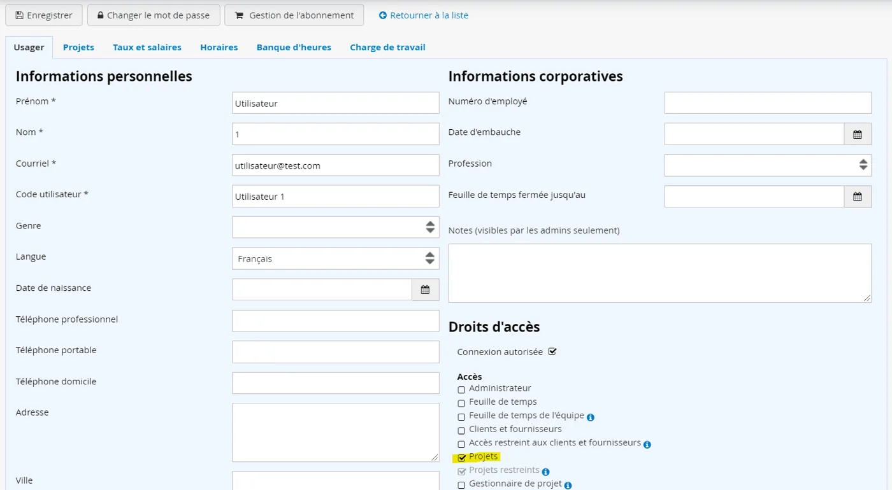
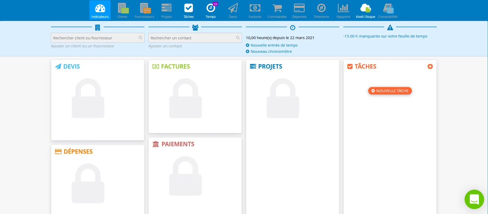
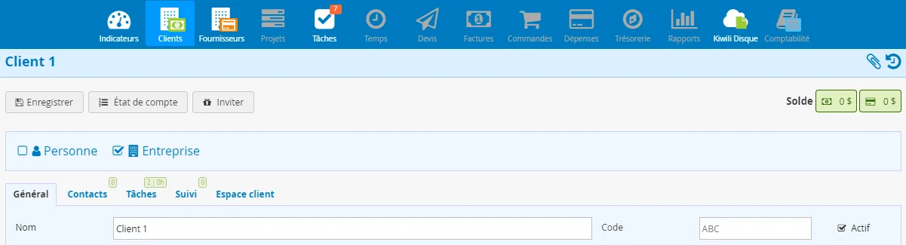
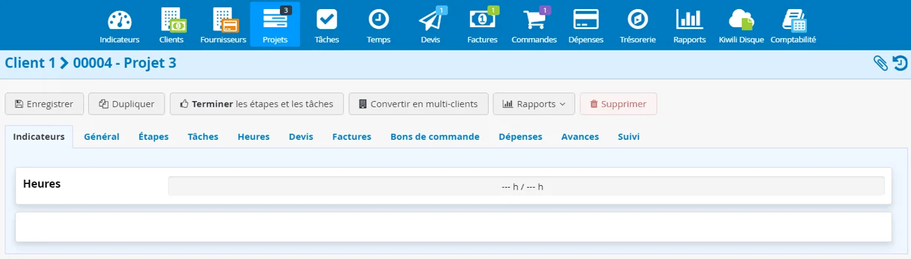
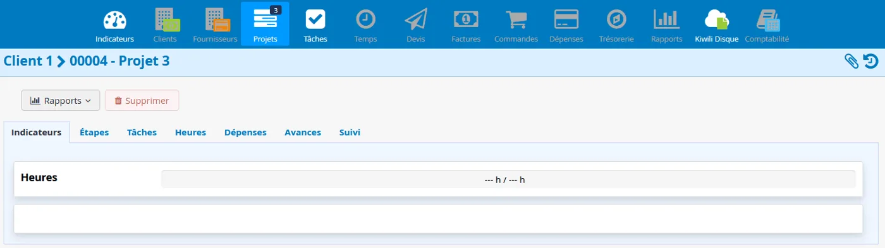

Gestion des droits d'accès
Les droits d'accès offrent un meilleur encadrement des accès destinés aux employés ou aux collaborateurs qui utilisent votre compte Kiwili. Voici le détail de chacun.
Qu'est-ce qu'un droit d'accès ?
Un droit d'accès est une permission qui détermine ce que chaque utilisateur peut faire ou voir dans votre compte Kiwili. En accordant ou non un droit précis à un utilisateur, vous lui permettez d'accéder à certaines informations ou fonctions du compte.
Les droits d'accès varient selon votre forfait. Les combinaisons sont nombreuses : vous pouvez associer plusieurs accès pour personnaliser les droits de chaque utilisateur.
Parmi les fonctions de Kiwili, le module tâches est toujours disponible, sauf pour le forfait standard.
Comment ajouter ou retirer un droit d'accès ?
Pour ajouter ou retirer des accès à un utilisateur :
- Ouvrez la fiche de l'utilisateur.
- Sous Accès, cochez ou décochez la ou les cases correspondantes.

Les différents droits d'accès
Voici les 24 droits d'accès détaillés dans ce guide, regroupés par domaine. Filtrez la liste ou ouvrez un droit pour voir en détail ce qu'il permet.
24 droits affichés
Administration et configuration4
AdministrateurAccès total
Le système requiert au moins un administrateur. Celui-ci a un accès total aux fonctionnalités et aux données financières du compte Kiwili. Il gère tous les droits d’accès des autres utilisateurs.
| Module | Ce que l’administrateur peut faire |
|---|---|
| Configuration | Gérer les utilisateurs, le profil d’entreprise, les informations de paiement, le forfait Kiwili, l’historique des prélèvements, les modèles globaux de documents, la gestion des messages et le suivi de projet. |
| Indicateurs | Voir le graphique global et le tableau des données financières. |
| Clients et fournisseurs | Accéder à toutes les informations. Une personne qui n’est pas administrateur ne voit pas, dans la fiche client ou fournisseur, les projets sur lesquels elle ne travaille pas. |
| Projets | Voir le graphique de charge de travail, les salaires et les trois types de marges, dans tous les projets, qu’il en soit membre ou non. Dans l’onglet temps, accéder à toutes les données de salaires et financières. |
| Rapports | Accéder aux rapports d’activité et de courriels, à toutes les informations de salaire et de coût horaire, ainsi qu’à la recherche des entrées de temps. |
Un utilisateur qui n’est pas administrateur d’un projet ne voit pas certaines informations, comme la charge de travail, le tableau des tâches ou les tâches des autres utilisateurs.
ConfigurationPartiel
Avec l’accès configuration, l’utilisateur peut paramétrer et modifier de nombreux éléments, bien que certains restent réservés à l’administrateur. Voici le détail des accès pour chaque encart de la configuration.
| Encart | Accès |
|---|---|
| Abonnement | Non autorisé |
| Présentation | Uniquement « champs personnalisés (clients et fournisseurs) » |
| Achats et ventes | Accès à tout |
| Comptabilité | Modes de paiement, charte comptable et taxes |
| Extranet | Non autorisé |
RapportsDonnées sensibles
Kiwili génère automatiquement de nombreux rapports clairs et complets qui permettent d’extraire des statistiques et des bilans utiles au développement des affaires. Vous pouvez, par exemple, obtenir des rapports précis sur vos impôts et taxes, un graphique de vos dépenses et revenus, ou un graphique des heures travaillées par client. Kiwili propose plus d’une soixantaine de rapports.
Ce droit donne accès à de nombreuses informations sensibles. Soyez vigilant et ne l’accordez pas à n’importe qui.
APIIntégrations
Pour autoriser certains utilisateurs à connecter leur compte Kiwili à d’autres applications, cochez la case API. Ils pourront alors activer l’API dans leur profil et générer un jeton.
Temps2
Feuille de temps
Cet accès permet à l’utilisateur de gérer son temps. Lorsque « feuille de temps » est coché, il a accès au module temps.

Dans l’onglet temps, il peut
- entrer le détail de ses heures ;
- démarrer plusieurs compteurs (chronomètres) en même temps ;
- ajouter du temps depuis une tâche ;
- convertir la durée travaillée en entrée de temps.
Il ne peut pas
- voir le temps des autres utilisateurs.
Feuille de temps de l’équipeImplique : feuille de temps
Cet accès, qui implique « feuille de temps », donne accès au module temps de toute l’équipe. L’utilisateur peut voir, ajouter et modifier du temps et des tâches pour l’ensemble des utilisateurs.
Il peut aussi fermer la feuille de temps de l’équipe, c’est-à-dire valider le temps de chaque utilisateur pour qu’il ne soit plus modifiable jusqu’à la date de fermeture. Cela évite les erreurs une fois le temps validé.
Clients et fournisseurs2
Clients et fournisseurs
Avec cet accès, l’utilisateur peut utiliser les modules clients et fournisseurs. Il peut voir, créer et modifier les clients et fournisseurs de l’entreprise. Les données financières (devis, factures, état de compte, soldes) lui sont accessibles selon les autres droits accordés.
Comparez l’onglet client ou fournisseur d’un utilisateur (accès général, contact, tâches, suivi, espace client) avec celui de l’administrateur, qui a l’accès complet.


Fiche client : vue de l’utilisateur et vue de l’administrateur.
Accès restreint aux clients et fournisseurs
L’utilisateur ne peut accéder qu’aux clients et fournisseurs dont il est administrateur.
Projets et tâches6
Projets
Ce droit permet à un utilisateur d’accéder aux projets dont il est administrateur ou usager. Il peut voir, créer et modifier ses projets ainsi que leurs étapes et leurs tâches.
Il n’a accès à aucune donnée financière. Seuls les administrateurs du compte Kiwili y ont accès en totalité.
Projets restreints
Cet accès ne permet pas à l’utilisateur de créer un projet.
Il peut
- accéder à la liste de ses projets ;
- voir les tâches, les heures et les suivis de ses projets.
Masqué pour lui
- les données financières : général, devis, factures et bons de commande.

Le même projet, vu avec l’accès restreint et par l’administrateur du compte Kiwili.
Gestionnaire de projetOption : avec salaire
L’utilisateur peut modifier les projets dont il est administrateur et voir plus d’informations financières sur ces projets, sans pouvoir déterminer le salaire d’un employé (sauf s’il a aussi le droit « salaire »).
Le statut de gestionnaire de projet donne accès aux modules suivants, mais seulement pour les projets dont l’utilisateur est administrateur :
- Projets (il ne peut pas créer de projet si l’accès projets n’est pas activé) ;
- Tâches (non touché par ce rôle) ;
- Temps (gestion du temps seulement, si l’accès temps n’est pas activé) ;
- Devis, factures et dépenses de ses projets.
Avec salaire
Le droit « avec salaire », que vous pouvez ajouter à « gestionnaire de projet », donne accès aux données liées au salaire : la charge salariale des projets, la charge de travail allouée au projet et le rapport avec les heures.
Tâches restreintes
Le module tâches de Kiwili permet de planifier, structurer et suivre les tâches de façon intuitive. Avec « tâches restreintes », l’utilisateur n’a accès qu’aux tâches qui lui sont assignées ou qu’il a créées. Il peut essentiellement commenter une tâche, renseigner son statut et entrer son temps.
Il peut aussi
- créer et planifier ses tâches (sans les lier aux services ni aux étapes d’un projet) ;
- voir toutes les tâches d’un projet auquel il est assigné ;
- indiquer une priorité, une échéance et un nombre d’heures prévues par tâche ;
- entrer des messages de suivi ;
- ajouter des documents et des pièces jointes ;
- voir l’historique des modifications ;
- importer et exporter des tâches.
S’il est administrateur d’une tâche, il peut en plus
- créer et assigner des tâches à d’autres membres de l’équipe, s’ils sont sur le même projet ;
- modifier ses tâches ou celles qu’il a assignées à d’autres utilisateurs.
SprintsCertains forfaits
Avec ce droit, l’utilisateur accède aux fonctions « Sprints » de l’onglet tâches, pour les sprints auxquels il participe :
- la date de début et de fin ;
- le statut du sprint ;
- l’administrateur du sprint ;
- la description ;
- les ressources allouées et leurs informations ;
- toutes les tâches incluses dans le sprint.
Si « tâches restreintes » est coché, il ne voit que les tâches qui lui sont assignées, et non toutes celles du sprint.
Fonctionnalité disponible uniquement dans certains forfaits.
Administrateur de sprintsCertains forfaits
En plus de consulter les sprints, ce droit permet d’en modifier les informations, de créer de nouveaux sprints et de les archiver.
Fonctionnalité disponible uniquement dans certains forfaits.
Devis et factures2
Devis
Ce droit permet de créer et d’émettre des devis professionnels en intégrant facilement toutes les informations indispensables. Pour en savoir plus, lisez notre article sur les devis.
L’utilisateur a accès au module devis, mais certaines fonctions lui sont inaccessibles sans les autres droits :
Il ne peut pas
- modifier le modèle global du devis sans « configuration » ;
- voir et associer un projet à un devis s’il n’est pas administrateur ou usager de ce projet et n’a pas « projets » ;
- convertir un devis en projet ou en facture sans « projets » ou « factures » ;
- ajouter un prospect ou accéder à la fiche client sans « clients et fournisseurs ».
Factures
Ce droit permet de créer et d’émettre rapidement des factures professionnelles. Pour en savoir plus, lisez notre article sur les factures.
L’utilisateur a accès au module factures, mais certaines fonctions lui sont inaccessibles sans les autres droits :
Il ne peut pas
- modifier le modèle global de la facture sans « configuration » ;
- voir et associer un projet à une facture s’il n’est pas administrateur ou usager de ce projet et n’a pas « projets » ;
- importer une dépense ou du temps sans « dépenses » ou « temps » ;
- ajouter un prospect ou accéder à la fiche client sans « clients » ;
- accéder aux devis et convertir un devis en facture sans « devis » ;
- accéder au module de paiement sans « paiements ».
Dépenses et achats4
Dépenses personnelles
Grâce à cet accès, l’utilisateur saisit et gère simplement les dépenses qu’il a effectuées. Consultez notre article sur la gestion des dépenses.
Il peut
- ajouter des dépenses régulières, groupées et récurrentes, uniquement pour lui ;
- joindre des reçus ou d’autres documents à ses dépenses ;
- renseigner la date, le poste (avec ou sans code comptable), le numéro de facture fournisseur, la description, le prix (hors taxes ou taxes incluses : les taxes se calculent automatiquement dans les deux sens) et la quantité ;
- exporter ses dépenses au format PDF ou XML.
Il ne peut pas
- lier ses dépenses à des clients, fournisseurs ou projets sans « clients/fournisseurs » ou « projets » ;
- accéder au module de paiement sans « paiements » ;
- convertir une dépense en facture sans « factures » ;
- modifier le statut d’une dépense sans « dépenses de l’équipe » ;
- annuler une dépense, même au statut de brouillon, sans « dépenses de l’équipe ».
Dépenses de l’équipeInclut : dépenses personnelles
Cet accès inclut les dépenses personnelles. L’utilisateur peut donc ajouter des dépenses en son nom et au nom d’autres utilisateurs.
Une fois la dépense créée, il peut
- indiquer qui a encouru la dépense ;
- choisir le fournisseur lié à la dépense ;
- sélectionner le projet lié, uniquement s’il en est usager ;
- faire passer le statut de brouillon à « à payer » ;
- annuler ou supprimer une dépense au statut de brouillon.
Il ne peut pas saisir le statut « payé », convertir des dépenses en factures ni entrer de paiements sans les droits nécessaires (paiements et factures).
Bon de commande
Cet accès permet de créer et de gérer des bons de commande fournisseurs. Pour en apprendre plus, lisez notre article sur les bons de commande.
Il peut
- ajouter un bon de commande ;
- sélectionner le fournisseur et le contact fournisseur ;
- sélectionner un projet, uniquement s’il en est usager ;
- définir les dates de commande, d’expédition et de livraison ;
- transmettre le bon de commande au fournisseur ;
- l’exporter en bon de livraison au format PDF ;
- modifier son statut (brouillon, transmis, expédié, partiellement livré, livré, annulé).
Il n’a pas accès à
- la modification de l’acheteur du bon de commande ;
- la gestion des commandes ;
- la configuration du bon de commande (modèle global) sans « configuration » ;
- la conversion du bon de commande en dépense sans « dépenses ».
Bon de commande de l’équipeInclut : bon de commande
Cet accès est similaire à « bon de commande ». Il offre les mêmes fonctionnalités et permet en plus de désigner d’autres utilisateurs comme acheteurs et de gérer les commandes.
Finances et comptabilité4
PaiementsSe combine avec factures et dépenses
Ce droit a été créé pour permettre à un utilisateur de saisir des paiements sur une facture ou des dépenses. Il doit être combiné avec les droits « factures » et « dépenses de l’équipe » pour permettre de saisir des paiements.
BudgetTrésorerie
Cet accès permet à l’utilisateur d’ouvrir le module trésorerie et d’avoir une vue prévisionnelle de la trésorerie sur 3 à 12 mois. Voir aussi l’article sur la trésorerie.
Il peut
- entrer des revenus et des dépenses prévisionnels ;
- saisir le solde actuel du compte bancaire, s’il possède cette information ;
- voir le tableau prévisionnel de l’entreprise.
Comptes bancairesAvec : configuration
Cet accès permet à un autre utilisateur de configurer vos comptes bancaires dans Kiwili. Il peut les voir, les modifier ou en ajouter de nouveaux. Il fonctionne uniquement si l’utilisateur a aussi l’accès « configuration ».
Pour accéder à la conciliation bancaire, le droit « comptes bancaires » doit être coché.
ComptabilitéOption COMPTABILITÉ+
Ce droit donne accès à l’option COMPTABILITÉ+. Voici ce que l’utilisateur peut faire lorsque vous cochez cet accès.
Dans Banque
| Fonction | Accès |
|---|---|
| Conciliation bancaire | Non autorisé (il faut aussi le droit « comptes bancaires ») |
| Rapport de conciliation bancaire | Autorisé |
| Impression de chèque | Création d’un chèque à partir d’une entrée de journal. Pas de nouveau chèque à un fournisseur sans le droit « paiements ». |
Dans COMPTABILITÉ+
| Fonction | Accès |
|---|---|
| Entrées manuelles du journal général | Autorisé |
| Journal général | Autorisé |
| Grand livre | Rapport de l’ensemble des comptes de l’entreprise, mais pas par projet |
| Balance de vérification | Autorisé |
| États des résultats | Rapport général, mais pas par projet |
| Bilan | Autorisé |
| Solde d’ouverture | Autorisé |
| Fermeture de l’année | Autorisé |
Dans Rapports standards
| Rapport | Accès |
|---|---|
| Codes comptables | Non autorisé |
| Comptes à recevoir | Non autorisé |
| État de compte | Non autorisé |
| Comptes à payer | Non autorisé |
| Paiements | Non autorisé |
| Taxes | Non autorisé |
| Registre de détention des sommes | Non autorisé |
| Fichier des écritures comptables | Autorisé |
Dans Configuration
| Fonction | Accès |
|---|---|
| Assistant de configuration COMPTABILITÉ+ | Uniquement la configuration des taxes et la définition des comptes |
| Configuration du modèle de chèque | Autorisé |
| Début d’exercice financier | Non autorisé |
| Comptes bancaires pour paiement en ligne | Autorisé |
Aucun droit ne correspond à cette recherche.
Aller plus loin
Maintenant que vous connaissez l'essentiel sur les droits d'accès, explorez les différentes combinaisons possibles pour répondre au mieux à vos besoins.
Besoin d'aide ?
Vous voulez en savoir plus sur les fonctionnalités de Kiwili ? Lisez notre section aide ou contactez-nous.